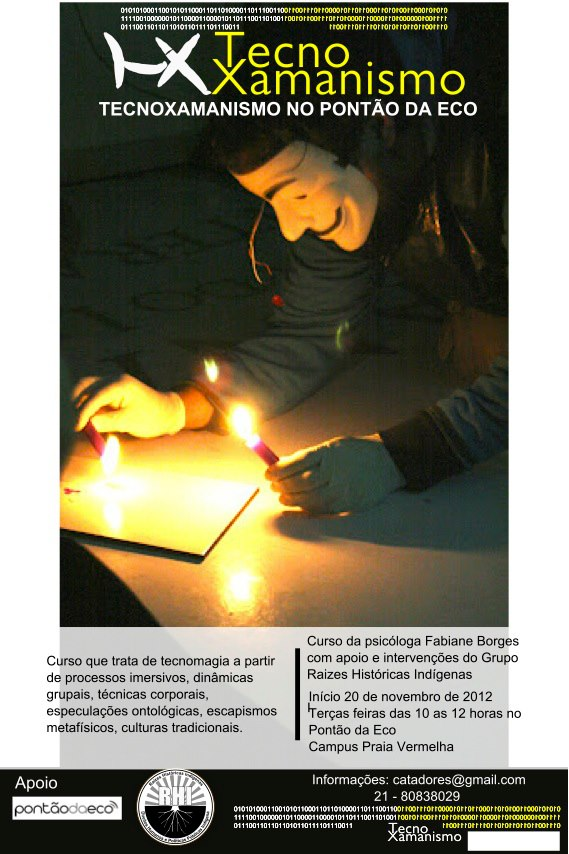

tecnomagias
Qual é a mágica de hoje?
Hoje é um dia mítico no imaginário dos tempos tecnomágicos: o mundo que desmorona, as máquinas que destroem paisagens construídas, a fragilidade do que parece seguro. 11 de setembro. O dia da queda de Ana.
Bruno Tarin postou no Copyfight:leia mais >>
A alma como antena é a MetaReciclagem
Marcos Egito resgatou um momento, de 2007, num install day de Debian e trouxe para lista sua percepção de rede:
Hoje sentindo o espírito metarec, e podendo me sentir um. Diante de uma galera que não sei como definir por não ter palavras que possam defini-los.
O que parece abstrato para muitos, que assistem metareciclagem de fora, é sentido por várixs da Rede, como tecnomagia:
Belisário, copilou Yupana Kernel:Quantos ouvidos precisam para dar sentido a tanta informação? Alguns fazem música, outros incorporam a gagueira das frequências, vira estilo musical – fragmentação das frequências – vira também pensamento. Modo de fazer pensamento. Como se o pensamento já não fosse assim, fragmentado e cheio de frequências. Ao invés de alma, antena.

A magia não é uma instituição, como perseguem os ocultistas, pois a institucionalização da tradição mágica não passa de anseio de nosso desejo de potência, a incapacidade humana de lidar com o Tempo e a morte, como transformação e finitude respectivamente. Eah de Apsu
Nuvem abre chamada para publicações colaborativas
Depois dos encontros presenciais realizados recentemente na Nuvem, está aberta a chamada para publicações do Tecnomagias e da EncontrADA, até o dia 7 de agosto.
A chamada para Tecnomagias está disponível aqui, e envolve: entrelaçamentos possíveis entre tecnologias e magias, chamanismos e cibercultura, e conhecimentos tradicionais e novas mídias.
Já as colaborações para a EncontrADA permeiam: feminismo e micropolíticas, ativismo feminista, apropriação tecnológica, uso do software e hardware livre pelas mulheres, feminismo e cultura livre, e conhecimento e reflexão sobre o próprio corpo.
As convocatórias não estão limitadas axs participantes dos encontros.
Mais informações: nuvemhr@gmail.com